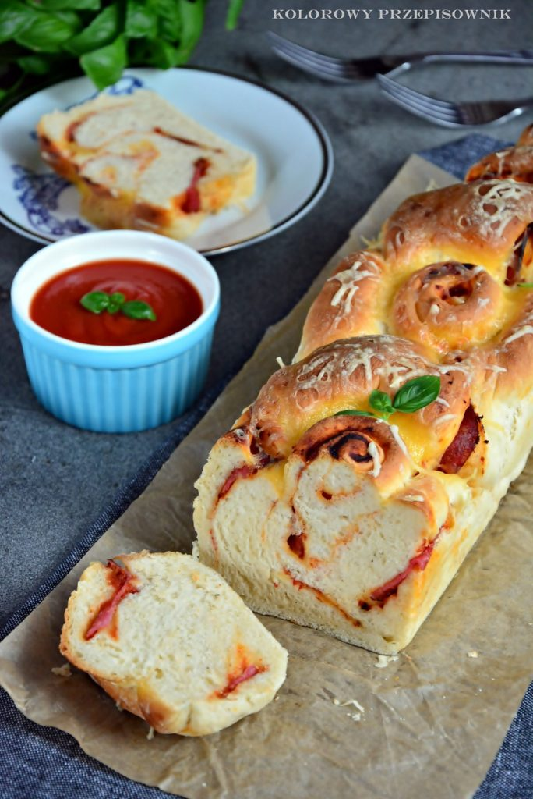

Chlebek puccia z
salami...

Czas przygotowania: 10 min
Typ diety: dowolna
Typ posiłku: śniadanie
Chlebek puccia z
salami...
Czas przygotowania: 10 min
Typ diety: dowolna
Typ posiłku: śniadanie
Chlebki puccia przekrawamy wzdłuż na pół, obie części skrapiamy oliwą i układamy na blasze wyłożonej papierem do pieczenia. Podpiekamy ok. 5 minut w piekarniku rozgrzanym do temperatury 180°C, aż zarumienią się z wierzchu.
Na dolną część podpieczonego chlebka puccia nakładamy połowę przygotowanej burraty, a na nią 4 plastry salami. Na warstwie salami układamy sałatkę z bazylii. Całość przykrywamy górną częścią podpieczonego chlebka. Analogicznie postępujemy przy drugiej kanapce